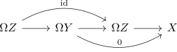

connecting morphism in a right split fiber sequence is zero morphism
Proposition
Let $\mathcal{C}$ be a category with terminal object and $X \rightarrow Y \xrightarrow{p} Z$ a left split fiber sequence. Then in the fiber puppe sequence the map $\Omega Z \rightarrow X$ is the zero morphism
Proof
consider the puppe sequence. Then in particular the map $\Omgea(p): \Omega Y \rightarrow \Omega Z$ is split epi, e.g. with one splitting given by $\Omega(\iota)$ where $\iota$ is one split mono for $p: Y \rightarrow Z$.
Hence
